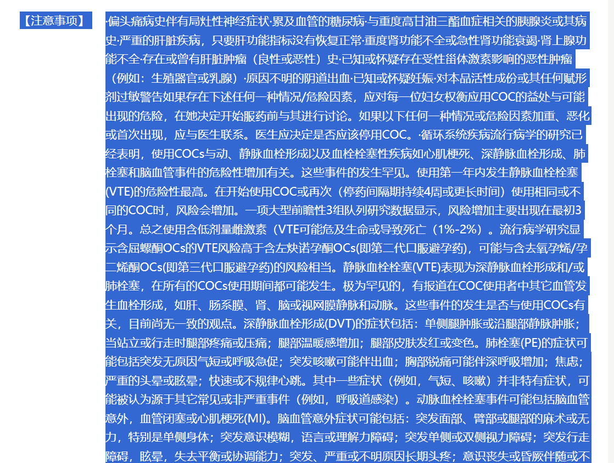

梦幻的奇迹乐园
@OHOHOH121121
RT @Seramikimiki: 任何，我tm是说任何
为了无套性爱让你吃避孕药的男朋友
都让他滚 fuck it off 立刻分手
但凡敢开这个口，就让他自己下单一份药品
再从头到尾把铺满整整一张大桌子的副作用清单给念完
包括但不限于：肝脏肿瘤、静脉血栓、心肌梗死、脑栓、突…

Sera
@Seramikimiki
任何，我tm是说任何
为了无套性爱让你吃避孕药的男朋友
都让他滚 fuck it off 立刻分手
但凡敢开这个口，就让他自己下单一份药品
再从头到尾把铺满整整一张大桌子的副作用清单给念完
包括但不限于：肝脏肿瘤、静脉血栓、心肌梗死、脑栓、突发眩晕、失明、肝功能异常、红斑狼疮、溶血性尿毒症.... https://t.co/nTdWE7NOjD